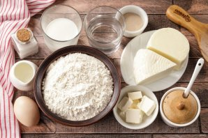
Подготовьте все ингредиенты по списку. Помимо указанных продуктов на фото возьмите 3-6 желтков, в зависимости от того, какого размера вы будете готовить хачапури. Для начинки лучше всего использовать имеретинский сыр. Я такой у себя не нашла, поэтому сделала замену на кавказские сыры — адыгейский и сулугуни.
В миску налейте тёплую воду и тёплое молоко, добавьте сахар и сухие дрожжи.
Перемешайте и дайте постоять 10-15 минут.
Затем добавьте соль, мягкое сливочное масло и яйцо.
Перемешайте.
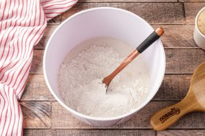
Добавьте муку.
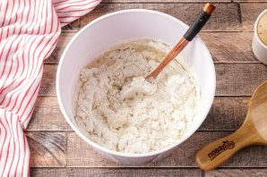
Я советую добавлять её частями, так как тесто должно быть очень мягкое. Даже у меня муки может уйти чуть больше или чуть меньше, но в среднем 460-500 грамм.
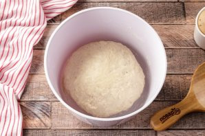
Когда тесто соберётся в единый комок — переходите работать на стол. Присыпаем его мукой и хорошенько вымешиваем тесто. Кстати, оно идеально подходит ещё и для пирожков с несладкой начинкой. В итоге тесто должно получится мягкое, эластичное, гладкое и не липнущее к рукам. Положите шарик теста в миску, накройте полотенцем и поставьте в тёплое место на подъём. Я ставлю в электрическую духовку, включённую на 40 градусов, дверцу закрываю. Тесто подходит таким образом в разы быстрее, а значит оно не перестаивает и не имеет ярко-выраженного запаха дрожжей.
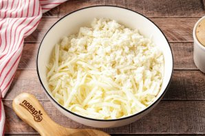
А пока сделаем начинку. Для хачапури по-аджарски берём 2 вида сыра — сулугуни, он плотный и нежный, а также адыгейский сыр, по своей структуре чем-то похож на творог. Сулугуни натрите на крупной тёрке, пересыпьте в миску, а адыгейский сыр разрываем руками на маленькие кусочки.
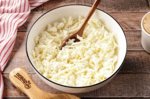
Перемешайте сыры и влейте к ним сливки. Я использую жирные сливки от 30%, но можно брать даже молоко, единственное его сначала добавьте 50 мл., посмотрите на консистенцию сырной массы, а затем если необходимо влейте ещё.
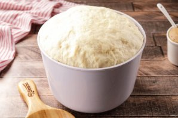
Возвращаемся к тесту, у меня оно подходило 50 минут.
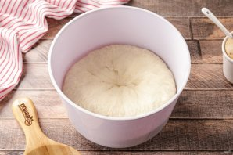
Подошедшее тесто необходимо обмять.
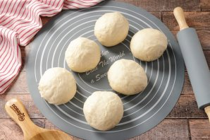
Разделите тесто на 3-6 равных частей. Получится или 3 больших хачапури или можно сделать хачапури маленькие. Здесь уже всё зависит от вас. Итак, каждый кусочек теста округляем, накрываем пакетом и даём постоять 10 минут.
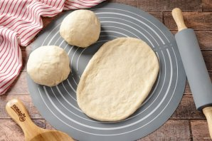
Начинку разделите на равные части, я использую весы. Раскатайте каждый кусочек теста в овал.
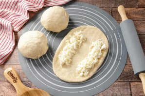
Выложите сырную начинку для бортиков.
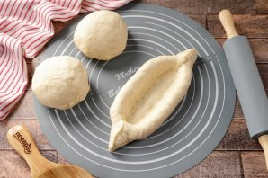
Аккуратно защипните их. Далее защипываем края, делая форму лодочки. Края защипываем хорошо, чтобы во время выпечки они не расползлись. Аналогично сформируйте остальные хачапури.
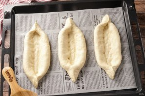
Переложите заготовки на противень, застеленный пергаментом для выпечки. Я буду выпекать в два захода.
В центр каждой лодочки выложите оставшуюся начинку. Хачапури выпекаем в заранее разогретой до 200 градусов духовке 15-20 минут. Духовку разогреваем вместе с маленькой металлической формой. После того, как духовка прогрелась, в форму наливаем стакан кипятка и ставим хачапури.
Выпекайте 15-20 минут с паром.
Тем временем отделите белки от желтков, нам понадобятся только желтки. Вкуснейшие хачапури практически готовы. В центре каждой лодочки сделайте небольшое углубление при помощи вилки и вылейте туда желток. Возвращаем хачапури в духовку ещё на 2 минуты.
Всё, хачапури по-аджарски настоящий готов, подаём их сразу, горячими, с пылу с жару. Обязательно добавьте 1-2 кусочка сливочного масла. Оно быстро тает и отдаёт весь свой вкус хачапури.
Приятного аппетита!